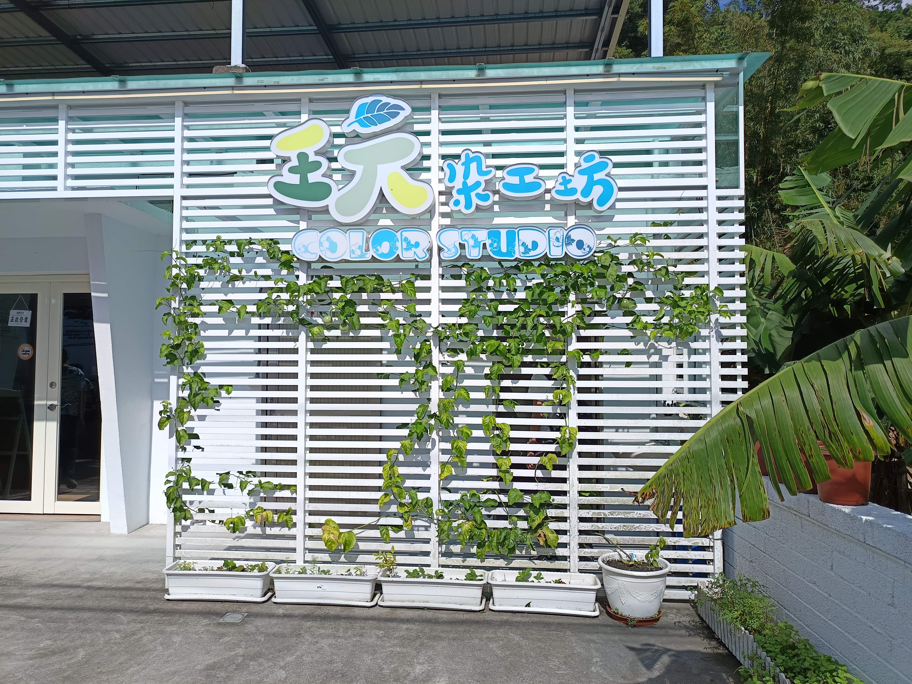
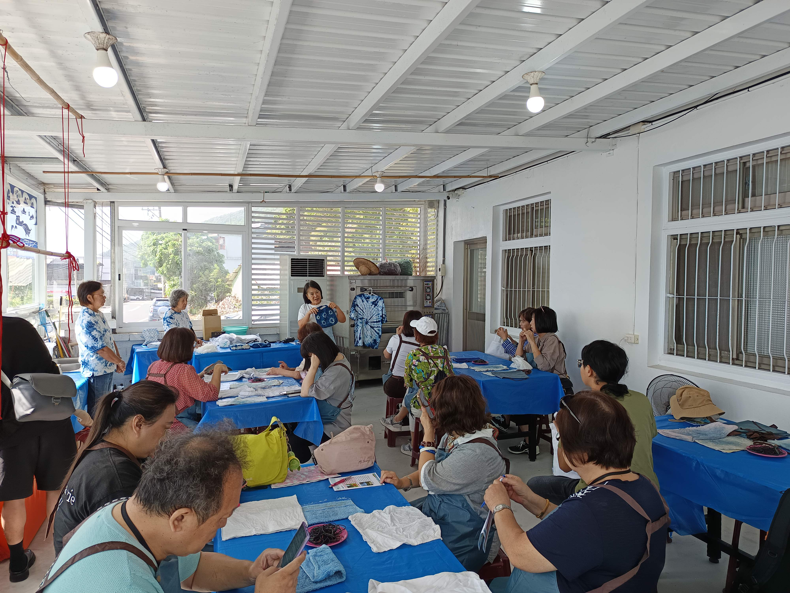
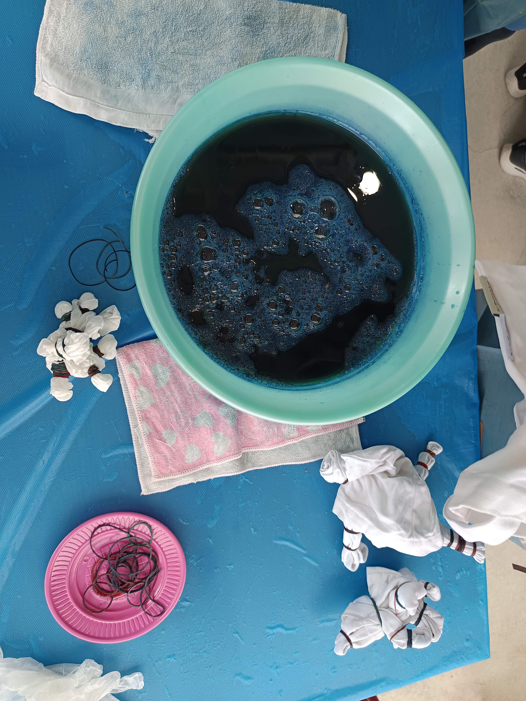
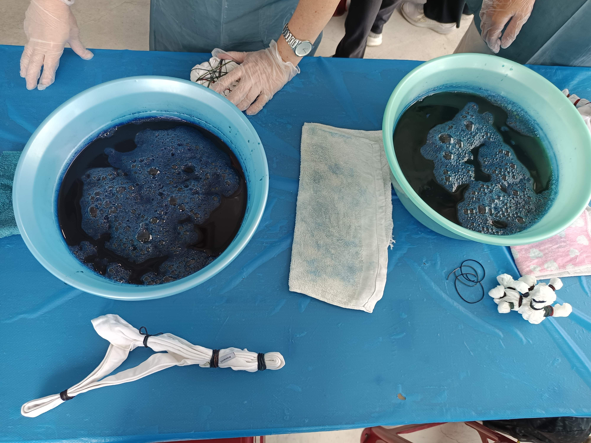

09:50 - 11:40
工藝體驗 ‧ 綠色生活
福成玩染工坊 (Color Studio)
宜蘭縣冬山鄉柯林村（福成社區）
早晨抵達恬靜的冬山福成社區，踏入綠意環抱的「福成玩染工坊」。由專業的藍染工藝師親切指導，從認識天然藍草、板藍植物發酵製靛開始，學習橡皮筋束綁、木片夾防染等傳統絞染技法。大家捲起衣袖，將純棉隨行杯套浸入藍染大缸中反覆揉捏、浸染，再經由清水洗滌與空氣氧化，原本淡綠色的布面奇蹟般轉化為層次豐富、沈穩雅致的靛藍色澤，親手創作出獨一無二的隨身藝術品。




旅人手帖：天然藍染剛完成時布料帶有獨特的植物青草芳香，前幾次清洗建議以常溫清水輕柔手洗、置於通風陰涼處晾乾，藍色會隨光陰轉化得更溫潤深邃。